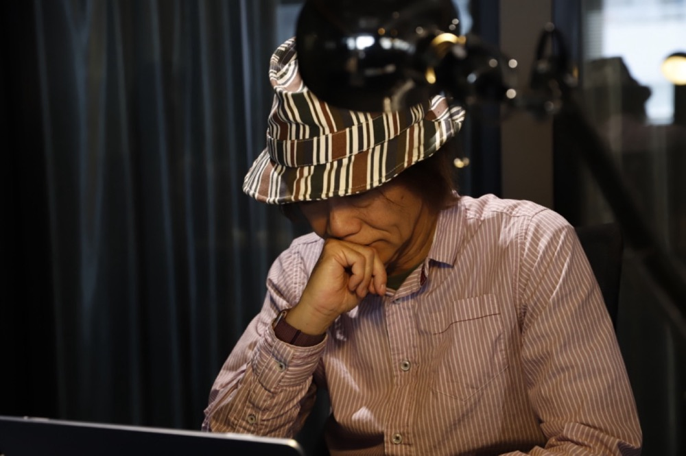
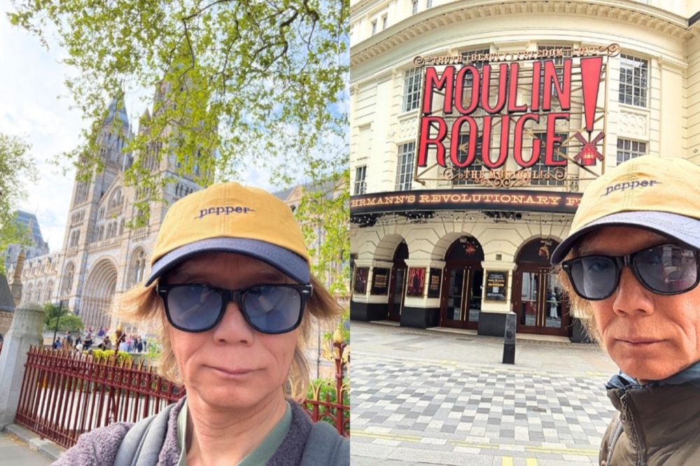
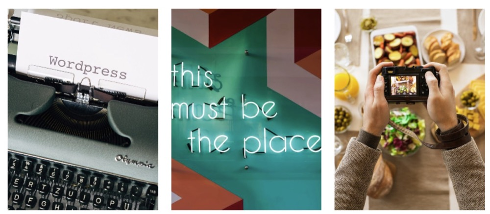
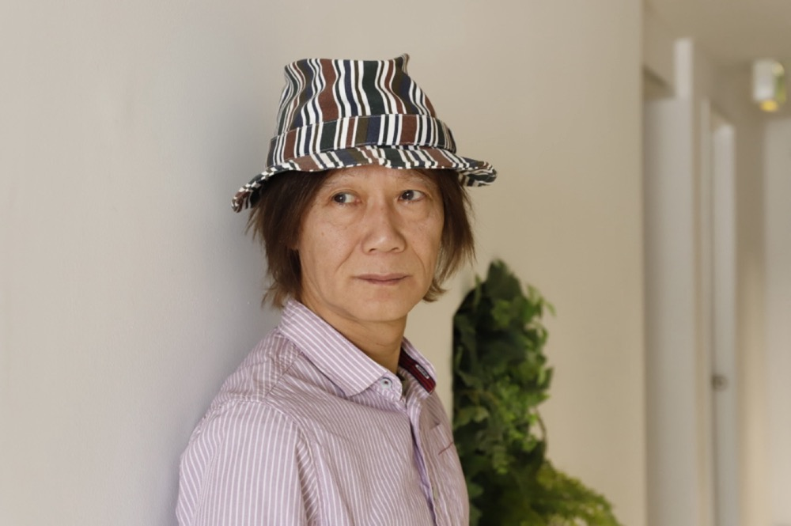

夢を形にする男
金田 茂樹Shigeki Kaneda
株式会社きららぼ 代表取締役社長
1959年岩手県生まれ。音大卒業後、15年間音楽教師を務める。退職後、40歳でIT業界へ転身。ライブドアでポータルサイトの礎を築く。55歳からフリーランスエンジニアとして活動し、2024年2月、株式会社きららぼを設立。
企業サイトを見るTRACK 01
夢を形にする男

東京の喧騒から少し離れた場所に、株式会社きららぼがある。ウェブデザインと制作を軸に、ECサイトの構築と運用までを手掛けるこの会社は、まるで現代の錬金術師の工房だ。そこに君臨するのは、代表取締役社長の金田茂樹。衰えることのない情熱と、時代の先端を切り開く鋭い眼光を持つ男である。
彼の手にかかれば、クライアントの夢は魔法のように形になり、それはまさにインターネットという無限の海を航海する船となる。きららぼは、単なる制作会社ではない。金田という男の人生そのものが投影された、まるで生き物のような存在だ。
TRACK 02
音楽からITの海へ

1959年、岩手県に生まれ、音楽という聖域に身を捧げた金田。音大を卒業後、15年間にわたり高校で音楽教師として若者たちに旋律の美しさを説いた。だが、彼の心は常に別の音色に共鳴していた。音大時代に起きた出来事、コンピュータの登場である。アップルが世界に台頭してきた時代、彼はSAXを極めるべく鍛錬を重ね、同時に高田馬場の小さな店に通い詰め、果ては当時約60万円のAppleIIという最高のマシンをただ触りたい一心で、そこでバイトを始めた。そこから彼の運命は加速する。
40歳でIT業界に飛び込んだ金田。面接90回を経て役員に拾われ、スーパーバイザーとして名刺を手にした瞬間、彼は「なんでもできる」と確信したという。ライブドア時代、彼はインターネットの未来を切り開いた。ニュース、天気予報、地図、ゲーム。今では当たり前のポータルサイトの要素を、産経新聞や気象会社に単身乗り込んで形にした。渋谷を走るライブドアのバスは、彼の勤めていたライブドアが広告媒体として初めて具現化した瞬間だった。
だが、時代の波は無情だ。無料プロバイダーの夢はフレッツの登場で崩れ、会社は畳まれた。それでも金田は諦めなかった。50代でまたしても指導者の道を歩み、55歳からは同時にフリーランスエンジニアとしても活動。そして2024年2月、きららぼを設立する。ECサイトでバスボムを扱い始めたタイミングで、彼はスクリプトを駆使してメルカリや楽天の売れ筋を分析し、中国の工場と交渉を重ねた。初月で100万円、3年後には月に1,000万円をゆうに超える売上を叩き出すまでに成長した。


TRACK 03
最高にカッコいいものを
きららぼの事業は、ウェブデザインとECサイト運用という二本柱で成り立っている。だが、その本質は「夢の実現」だと彼は語る。クライアントが「素敵なサイトを作りたい」「ECで自分の商品を売りたい」と願えば、金田は必ずそれを叶える。AIをすでに当たり前の道具として使いこなし、時代の流れに逆らうことなく「最高にカッコいいもの」を生み出すのだ。その強みは、最先端技術への執着と、クライアントのニーズを深く理解する鋭い感性にある。例えば、彼が開発したハンディファンは、100段階の強力な風を小さなボディで実現し、新たな市場を試すほどの革新性を持つ。
今、金田が注力するのは、プロダクト開発とその展開だ。バスボムから始まり、ステンレス製の万能調理器具、そして最新のハンディファンまで、彼の手掛ける製品はどれも「時代のニーズ」を捉えている。